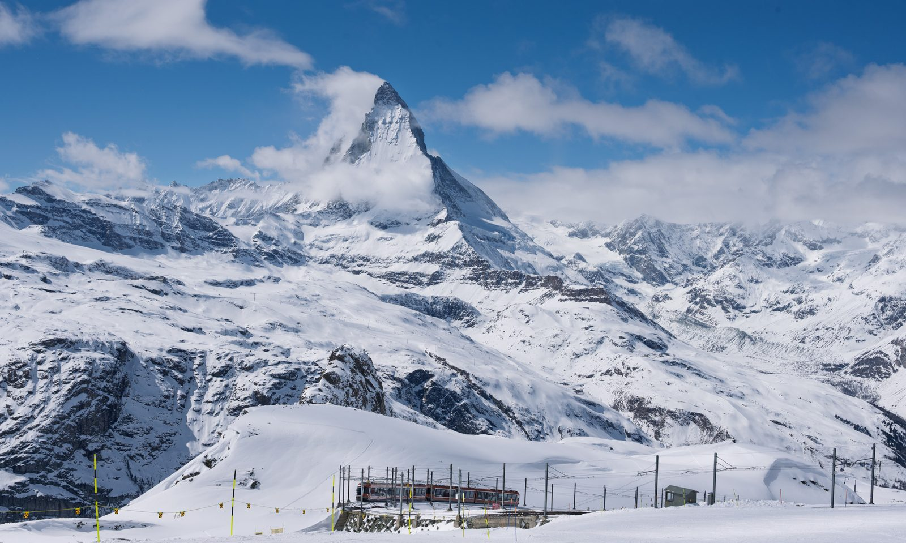
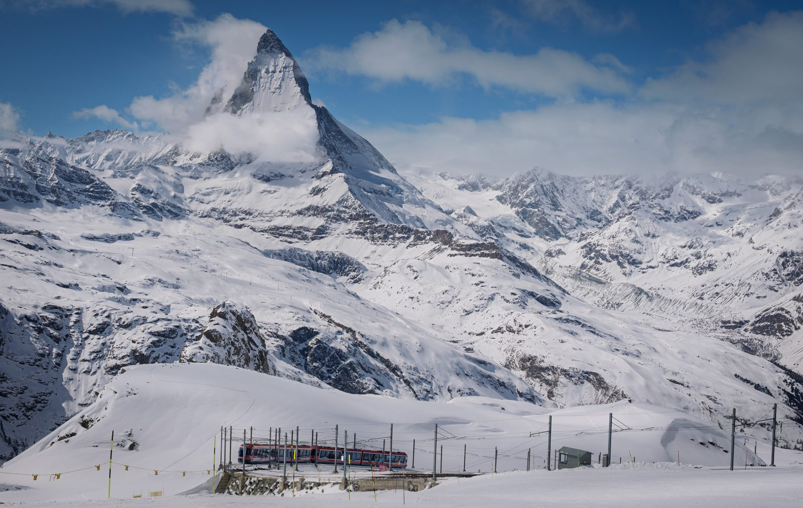

For photographers
Honest feedback on your photographs.
Noemeo reviews a photo the way a thoughtful editor would — what works, what holds the image back, and what to try next — then talks it through with you.
Request beta accessHow it works
A critique you can argue with
-
01
Review
Add a photo and get a verdict on its craft and emotional impact, with a written critique: what's working, what isn't, and concrete suggestions.
-
02
Talk it through
Ask why, push back, or explain what you were going for. Noemeo takes what you tell it into account, and you can see and remove anything it remembers about a photo.
-
03
Edit and compare
Bring in a new version and ask whether it's better. Noemeo compares it against what came before instead of judging it from scratch.
A real session
The Matterhorn, over eight edits


The mountain is an immediately legible focal point, and the cloud wrapping its summit adds drama, scale, and a sense of weather in motion. Layered snowy ridges create depth and carry the eye toward the peak, while the blue-and-white palette feels crisp and wintry. The small infrastructure at the bottom also provides useful human scale and keeps the view from becoming purely postcard-like. The foreground infrastructure is visually untidy rather than compositionally purposeful: poles, fencing, and the partially clipped structure crowd the lower edge and compete with the otherwise majestic subject. The framing also gives the peak limited breathing room above, while the broad, detailed snowfield spreads attention across the frame. Bright snow approaches a slightly harsh, cool rendering in places, reducing tonal nuance. The scene is compelling but familiar, and the functional foreground prevents the composition from fully resolving into a portfolio-level landscape.
I want to make a contrast between the Matterhorn slope and a cloud right in front of it.
That intent changes the priority: the cloud should read as a distinct veil crossing the Matterhorn’s darker slope, not simply as general weather. The current frame already contains the contrast, especially along the mountain’s upper-right face, but the cloud and snow are close enough in brightness and cool color that their boundary becomes subdued. Keep the broad crop; refine that overlap locally rather than adding global contrast.
Suggested edit · Lightroom · excerpt, 2 of 4 adjustments
- Masking – Select Object/Brush on the Matterhorn slope behind the cloud
- Add modest Texture and Clarity, deepen Blacks slightly, and use a small Dehaze increase while protecting the cloud itself.
- Masking – Brush or Luminance Range on the foreground cloud
- Lift Whites slightly, reduce Texture and Clarity a little, and keep Dehaze neutral or slightly negative so the cloud remains luminous and soft.
I disagree to some degree about competing parts. We need to set a hierarchy. For instance, Matterhorn -> a slope that transitions into a plateau in the center-right of the image. That forms a diagonal leading to a peak. A cloud in front of another slope nicely breaks the diagonal of that slope. An electric train shows the Matterhorn's scale. Maybe we need to make more contrast between a left ridge and a cloud behind.
I agree with that hierarchy. Read this way, the train and broader terrain are not automatically competing subjects: the center-right plateau helps launch the long diagonal toward the Matterhorn, while the train provides a deliberately subordinate scale cue. The real issue is whether those supporting elements remain subordinate—not whether they exist.
Your proposed emphasis on the left ridge against the cloud behind it is worthwhile. That boundary is currently softer and less legible than the dark Matterhorn slope against its foreground cloud. Strengthening it slightly would clarify the ridge sequence and improve the visual route toward the summit. Keep the adjustment local and restrained, though: if the left ridge becomes as crisp or dark as the Matterhorn, it will split attention rather than reinforce the hierarchy.
Do you like it more?
Compared with the previous version: closer to what you were going for
Compared with the immediately previous version, the change is extremely subtle, but it moves in the right direction. The left ridge separates a little more clearly from the cloud behind it, so that broken diagonal reads better and feeds the eye toward the Matterhorn without becoming a rival subject. The Matterhorn remains dominant, the center-right terrain still supports the route toward it, and the train continues to function as a scale cue. I would stop short of adding much more contrast there—the ridge is now legible enough, and stronger local definition could make the left side compete with the main mountain–cloud boundary.
Excerpt from a real session, shared by the photographer. Noemeo’s replies are unedited; some turns are left out, and typos in the photographer’s messages are corrected.
Works with Lightroom Classic
Review photos straight from your catalog
- Review selected photos from the Library menu and keep the critique alongside each photo.
- Suggested ratings and flags are only ever suggestions — Noemeo asks before changing anything, and you can undo it.
- Suggest descriptive keywords for your photos.
- Lightroom is optional: you can also add photos to Noemeo directly.
Privacy
Your photos stay on your computer
Your photos, conversations and everything Noemeo learns about them are kept on your own computer — not in Noemeo's cloud.
To give feedback, Noemeo sends only the photo and text needed for that one review to an AI model, through Amazon Web Services. It is processed for that request and not stored. Noemeo's cloud keeps only what an account needs: your sign-in, the names of the computers you use Noemeo on, and how much of your allowance you've used.
Availability
Noemeo is in closed beta
We're opening access to a small group of photographers first. If you'd like to try it, write to ilya@noemeo.com and tell us a little about how you work.